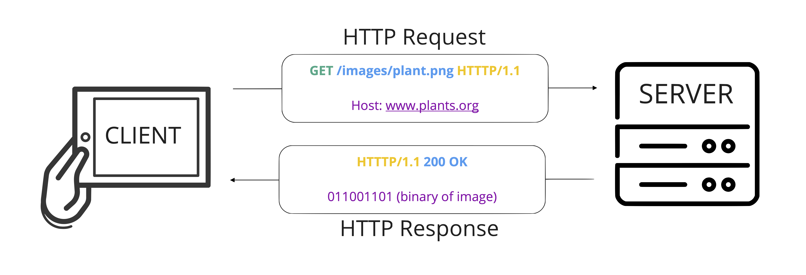
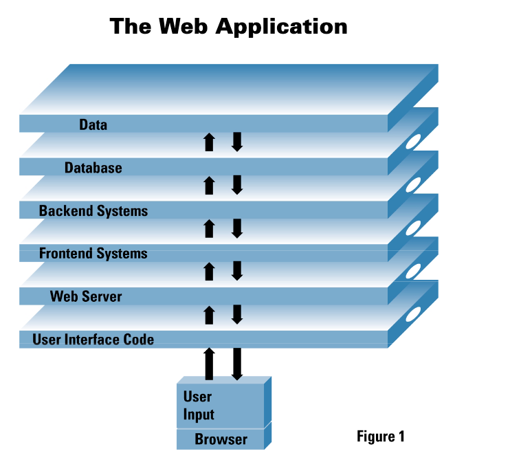
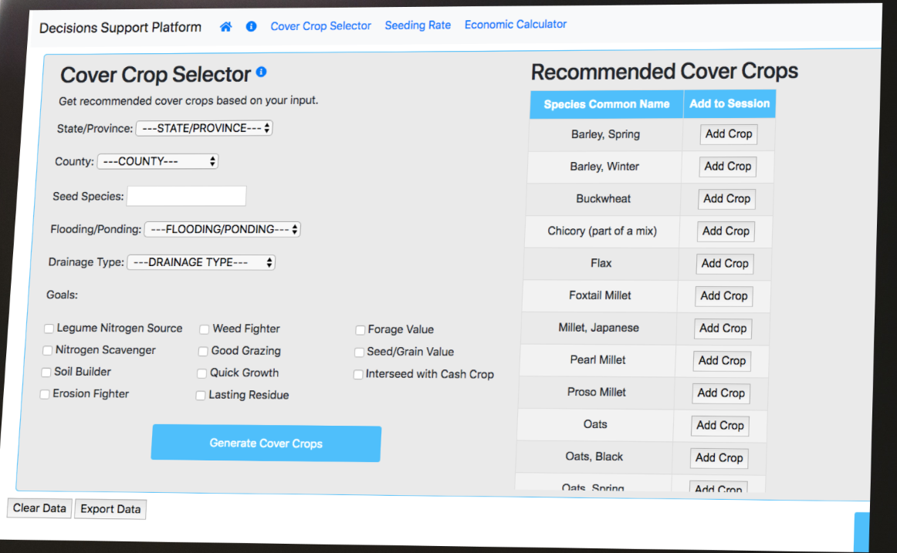

Introduction to Ag Informatics
Module 4, Lecture 1Ankita Raturi, ankita@purdue.edu
Outline for Today
- Dynamic Web Application
Static Websites
Dynamic Sites?
"[C]an generate and return content based on the specific request URL and data (rather than always returning the same hard-coded file for a particular URL)."
https://developer.mozilla.org/en-US/docs/Learn/Server-side/First_steps/Client-Server_overview
Dynamic sites
(Web Apps)
use 'server-side' code to...
- Store, structure, and deliver data (e.g., search engine)
- Notify user on status (e.g., calendar notifications)
- Provide controlled access to content (e.g., email)
- Data analysis to provide user recommendations (e.g., netflix)
- Provide customized user experiences ("Hello {{ person_name }}!)"
- ...and much more!
Server-Side Programming

"Requests for dynamic resources are instead forwarded (2) to server-side code (shown in the diagram as a Web Application). For "dynamic requests" the server interprets the request, reads required information from the database (3), combines the retrieved data with HTML templates (4), and sends back a response containing the generated HTML (5,6)."
A Simplified Web App Architecture
Pettit, 2001, White paper: Anatomy of a Web Application: Security Considerations. https://www.cgisecurity.com/lib/Web_Server.pdf
Web Frameworks
Django (python). Flask (python). Drupal (php). Express (javascript). Spring (java). ASP.NET. Ruby on Rails (ruby)
- Handle HTTP requests and responses
- Manage access to data (in request, in database)
- Render data in dynamic user interfaces
- ...provide a skeleton and toolbox to build web apps!
Django
- Easy(ish) to learn: esp. since we've already started python
- Batteries included: lots of good defaults (web security, caching, shortcuts)
- Excellent documentation.
- Built to scale
- Portable - runs on Windows, Linux, and Mac OS X.
- Good for rapid prototyping!
Built with Django?
What's used in AgTech?
- Farmlogs/Bushel (backend software engineer)
- Granular (software engineer - python )
- AcreTrader (python software engineer)
- FarmOS (open source drupal)
- USDA (ARS & NASS positions)
Django for Rapid Prototyping
- Used to create an early prototype of a cover crop decision support platform for Northeast Cover Crop Council + USDA ARS
- Quick prototype = 6 undergrad CS students x 3 months
- Focus on proof of concept for converting an excel tool to online web app
Structure of a Django Application

Need to know: Object Oriented Programming in Python!
Questions?
License
- Attribution Recommendation: Introduction to Agricultural Informatics Course", Ankita Raturi, Purdue University, 2021. Available at https://github.com/ag-informatics/ag-informatics-course. Licensed by CC BY-NC-SA 4.0.

This course is licensed under a Creative Commons Attribution-NonCommercial-ShareAlike 4.0 International (CC BY-NC-SA 4.0) license. This is a human-readable summary of (and not a substitute for) the license. Official translations of this license are available in other languages.
You are free to:
- Share — copy and redistribute the material in any medium or format
- Adapt — remix, transform, and build upon the material
Under the following terms:
- Attribution — You must give appropriate credit, provide a link to the license, and indicate if changes were made. You may do so in any reasonable manner, but not in any way that suggests the licensor endorses you or your use.
- NonCommercial — You may not use the material for commercial purposes.
- ShareAlike — If you remix, transform, or build upon the material, you must distribute your contributions under the same license as the original.
- No additional restrictions — You may not apply legal terms or technological measures that legally restrict others from doing anything the license permits.